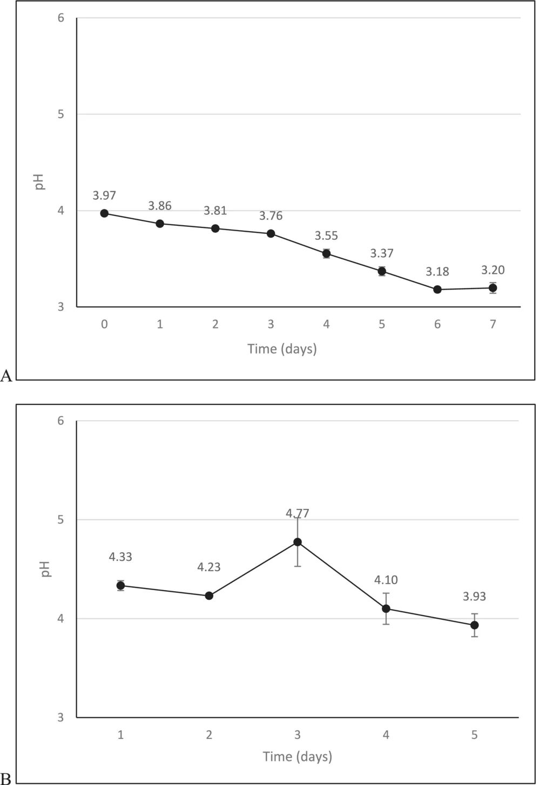
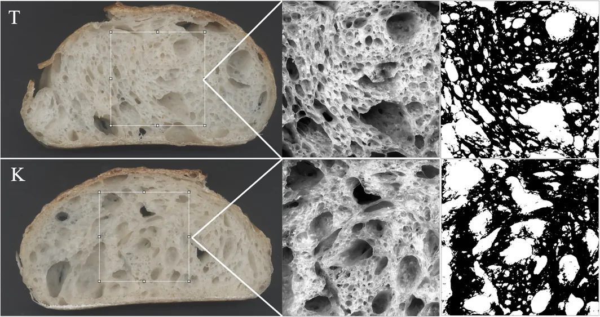

Choy qo'ziqorini xamirturush o'rnida: kombucha non achishini qanday tezlashtiradi


Rasmning to'liq tavsifi
Fermentatsiya jarayonida pH ning oʻzgarishi. (A) Kombucha pH qiymatining 7 kunlik fermentatsiya davomidagi oʻzgarishi. (B) Kombucha asosidagi xamirturush (KS) tayyorlash uchun zarur boʻlgan 5 kun davomida pH ning oʻzgarishi. Qiymatlar uchta biologik takroriy oʻlchovning oʻrtacha qiymati ± standart chetlanishni ifodalaydi.
An'anaviy xamirturushni noldan yetiltirish ko'pincha haftalab vaqt oladi. Texnologlar nostandart yechim taklif qildi: bakteriya va achitqilar simbioziga boy suyuq kombuchani starter sifatida ishlatish. Atigi besh kunlik oziqlantirishdan so'ng xamir texnologik yetuklikka erishib, a'lo darajadagi g'ovaklikka ega non beradi. Shu bilan birga, tayyor non an'anaviy xamirturushli nonga nisbatan ko'proq fenol birikmalarini saqlab qoladi.
Asosiysi
- Kombucha asosidagi xamirturush 23 °C haroratda atigi 5 kunda to'liq yetiladi.
- Xamir un massasiga nisbatan 33% starter bilan qorilib, 4 °C da 12 soat yetiltirildi.
- Tayyor non odatiy tuzilishni saqlab, antioksidantlar miqdori bo'yicha ustun keldi.
Batafsil
Birinchi turdagi klassik xamirturushni yetishtirish mikrofloraning barqarorlashishi uchun uzoq vaqt talab qiladi. Tadqiqotda qora choy asosida 7 kun fermentatsiyalangan kombucha (12 g/l Camellia sinensis, 70 °C da 60 soniya damlangan) boshlang'ich starter bo'ldi. Dastlabki kuni 15,5% oqsilli 100 g un va 100 ml kombucha aralashtirilib, 23 °C da qoldirildi. Ikkinchi kuni 100 g un va 50 ml suv qo'shildi, uchinchi va to'rtinchi kunlari esa quyuq xamirturush holatiga moslashish uchun suv miqdori 45 ml gacha kamaytirildi.
Besh sutka ichida xamirturush to'liq tayyor bo'ldi. Non xamiri 600 g un, 500 g suv, 200 g yetilgan starter (un vazniga nisbatan 33%) va 12 g osh tuzidan qorildi. Xamir 28 °C da ikki barobar oshguncha tindirildi, 325 grammlik bo'laklarga bo'linib, 4 °C da 12 soat davomida sovuq usulda yetiltirildi va tosh pechda 250 °C da 40 daqiqa pishirildi. Natijada nonning hajmi, yumshoqligi va eskirish tezligi an'anaviy nonga teng bo'ldi, ammo kombuchali non DPPH testida yuqori antioksidantlik faolligini ko'rsatdi.
Cheklovlar
Tadqiqot bitta choy va un navi bilan kichik hajmda o'tkazilgan, uzoq muddatli qayta oziqlantirishdagi mikroflora turg'unligi baholanmagan.
Maqolaning to'liq tarjimasi
Annotatsiya
Soʻnggi yillarda isteʼmolchilarning ovqatlanish va salomatlik oʻrtasidagi bogʻliqlik haqidagi xabardorligi nafaqat ozuqaviy qiymatga, balki qoʻshimcha fiziologik va funksional foydalarga ega boʻlgan oziq-ovqat mahsulotlariga boʻlgan talabni oshirdi. Oziq-ovqat mahsulotlarining xilma-xilligi va sifati ushbu yangi kutishlarga moslashish uchun sezilarli darajada rivojlandi. Bu funksional oziq-ovqat mahsulotlarining rivojlanishiga olib keldi — bular organizmdagi bir yoki bir nechta maqsadli funksiyalarga asosiy ozuqaviy taʼsirlardan tashqari foydali taʼsir koʻrsatishga qodir mahsulotlardir. Ushbu toifadagi fermentlangan mahsulotlar orasida kombucha (choy qoʻziqorini) ayniqsa qiziqarli namunadir. Kombucha — bu shakarli qora yoki yashil choydan anʼanaviy tarzda olinadigan, biroz kislotali va shirin fermentlangan ichimlik, garchi meva va oʻsimlik asosidagi infuziyalar kabi muqobil substratlar ham oʻrganilgan. Uning fermentatsiyasi aerob sharoitda bakteriyalar va achitqilarning simbiotik madaniyati (SCOBY) tomonidan amalga oshiriladi, bu organik kislotalar, polifenollar, vitaminlar, aminokislotalar va minerallarni oʻz ichiga olgan keng turdagi bioaktiv birikmalarning ishlab chiqarilishiga olib keladi. Murakkab biokimyoviy tarkibi va foydali mikroorganizmlar mavjudligi tufayli kombucha antioksidant, mikroblarga qarshi va yalligʻlanishga qarshi taʼsirlar kabi bir qancha biologik faolliklar bilan bogʻliq.
Muhim
Kombucha — bu bakteriyalar va achitqilarning simbiotik madaniyati (SCOBY) yordamida olinadigan fermentlangan ichimlik boʻlib, u keng turdagi bioaktiv birikmalarni oʻz ichiga oladi va funksional xususiyatlarga ega.
Koʻpgina tadqiqotlar kombucha mikrobiotasining ozuqaviy ahamiyatga ega metabolitlar ishlab chiqarishdagi rolini oʻrgangan boʻlsa-da, kombuchadan pishloq, yogurt yoki non kabi boshqa fermentlangan mahsulotlar uchun mikrobial starter sifatida foydalanishga qaratilgan tadqiqotlar kam. Non asrlar davomida inson ratsionining asosiy tarkibiy qismi boʻlib kelgan va anʼanaviy ravishda donli xamirni fermentatsiyalash orqali ishlab chiqariladi. Nonvoy achitqisi (Saccharomyces cerevisiae) sanoat nonvoychiligida asosiy koʻpirtiruvchi vosita boʻlib qolsa-da, nonning ozuqaviy va funksional xususiyatlarini yaxshilashga qaratilgan fermentatsiya strategiyalariga eʼtibor kuchaymoqda. Shu nuqtayi nazardan, kombuchadan olingan mikrobial konsorsiumlardan xamir turshatish (sourdough) fermentatsiyasi uchun muqobil starter sifatida foydalanish yangi va kam oʻrganilgan yondashuvdir. Kombuchani xamirga toʻgʻridan-toʻgʻri qoʻshish oʻrniga, uni xamir turshatish starterini ishlab chiqish uchun mikrobial inokulyat sifatida ishlatish mumkin, keyinchalik u non tayyorlash uchun ishlatiladi. Bu strategiya kombuchada tabiiy ravishda mavjud boʻlgan bakteriyalar va achitqilarning murakkab simbiotik madaniyatiga donli matritsaga moslashish va barqaror xamir turshatish ekotizimini yaratish imkonini beradi. Bunday yondashuv xamir turshatish yetilishini sezilarli darajada tezlashtirishi va shu bilan birga tayyor non mahsulotining texnologik, sensor va funksional xususiyatlariga taʼsir qilishi mumkin.
Ehtiyot bo'ling
Ushbu tadqiqot eksperimental xarakterga ega: mualliflar suyuq kombuchadan xamir turshatishni yaratish uchun inokulyat sifatida foydalanganlar va olingan nonni anʼanaviy xamir turshatishli non bilan solishtirganlar.
Ushbu tadqiqotda suyuq kombuchadan ketma-ket qayta ishlash (backslopping) bosqichlari orqali yangilanadigan xamir turshatish tizimini ishlab chiqish uchun tabiiy murakkab inokulyat sifatida toʻgʻridan-toʻgʻri foydalanish va uni non tayyorlash jarayonida qoʻllash oʻrganildi. Fizik-kimyoviy, tarkibiy va sensor tahlillar shuni koʻrsatdiki, kombucha noni anʼanaviy xamir turshatishli nonning aksariyat xususiyatlarini saqlab qoladi, shu bilan birga fenolik tarkib va antioksidant sigʻim kombucha nonida sezilarli darajada yuqori boʻlgan.
Choy va kombucha Cardoso va boshq. usuli boʻyicha kichik oʻzgarishlar bilan tayyorlandi. 1 l kombucha olish uchun 12 g qora choy barglari (Camellia sinensis L.) 1 l 70°C haroratdagi steril suvga solindi va 60 soniya davomida damlandi. Keyin infuziya toza paxta mato orqali filtrlandi va xona haroratigacha sovutildi. Inokulyat sifatida 10% (v/v) kombucha va 3% (w/v) laboratoriyada 2 yildan ortiq saqlangan SCOBY ishlatildi. Idishlar toza paxta mato bilan yopildi va 23°C da 7 kun davomida fermentatsiya qilindi. Har kuni pH oʻlchandi. Fermentatsiya oxirida hosil boʻlgan SCOBY olib tashlandi va kombucha 4°C da saqlandi.
Izoh
«Backslopping» (qayta ishlash) usuli — bu xamir turshatishni saqlashning anʼanaviy usuli boʻlib, unda yetilgan xamirning bir qismi yangi un va suvni fermentatsiyalash uchun ishlatiladi.
Petra 6384 (xamir turshatish uchun) va Petra 5037 (non tayyorlash uchun) bugʻdoy uni ishlatildi. Unning mikrobial yuki 1 g unni 9 ml buferli pepton suvida eritib, soʻngra Plate Count Agar muhitiga ekib va 30°C da 48 soat davomida inkubatsiya qilish orqali aniqlandi.
Kombucha asosidagi xamir turshatishni (KS) tayyorlash jarayoni 5 kun davom etadi. 100 g un 100 ml kombucha bilan aralashtirildi va 23°C da 24 soat davomida inkubatsiya qilindi. Keyingi kunlarda «yangilash» amalga oshirildi: 100 g fermentlangan xamir, 100 g un va 50 ml (keyin 45 ml) vodoprovod suvi aralashtirildi. pH har kuni nazorat qilindi. Anʼanaviy xamir turshatish (TS) sifatida kundalik yangilanadigan I turdagi hunarmandchilik xamir turshatish ishlatildi.
Xamir 600 g bugʻdoy uni, 500 g mineral suv, 200 g xamir turshatish (un vaznining taxminan 33%) va 12 g natriy xloriddan tayyorlandi. Xamir qorish 20 daqiqa davom etdi. Asosiy fermentatsiya 28°C da hajm ikki baravar koʻpayguncha davom etdi. Keyin xamir 4 ta 325 g li boʻlakka boʻlindi, 4°C da 12 soat davomida tindirildi va 250°C da 40 daqiqa davomida pishirildi.
Sirka kislotali bakteriyalar GYC muhitida (glyukoza 50 g/l, achitqi ekstrakti 10 g/l, kalsiy karbonat 5 g/l, agar 20 g/l), sut kislotali bakteriyalar MRS muhitida, achitqilar YPD muhitida hisoblandi. Muhitlar siklogeksimid (100 mg/l) yoki xloramfenikol (100 mg/l) bilan toʻldirildi.
10 g xamir turshatish 90 ml 0,9% natriy xlorid eritmasi bilan Seward Stomacher 400 gomogenizatorida aralashtirildi (2,5 daqiqa, 260 rpm). Achitqilar va sirka kislotali bakteriyalar YPD va GYC da, sut kislotali bakteriyalar MRS5 muhitida hisoblandi (30°C da 96 soat, anaerob sharoitda).
Namunalar -20°C da muzlatildi, liofilizatsiya qilindi va kukun holiga keltirildi. 1 g kukun 5 ml 80% (v/v) suv-metanol eritmasi bilan aralashtirildi, ultratovush bilan ishlov berildi (15 daqiqa), sentrifugalandi (10 daqiqa, 5000 rpm). Jarayon ikki marta takrorlandi.
Antioksidant faollik DPPH (radikal yutish), FRAP (temirni qaytarish) va Folin-Chokalteu (umumiy fenol miqdori, TPC) usullari bilan baholandi. Natijalar 100 ml yoki 1 g namunaga nisbatan Trolox ekvivalenti (TE) yoki gall kislotasi (GAE) mg larda ifodalandi.
Non hajmi raps urugʻini siqib chiqarish usuli (AACC 10–05.01) bilan aniqlandi. Namlik va suv faolligi (aw) sovutishdan soʻng darhol (T0) va 48 soatdan keyin (T48) oʻlchandi. Rang CIE Lab* tizimida baholandi. Tarkibi skaner va ImageJ2 dasturi yordamida tahlil qilindi. Tekstura profili (TPA) TA.Xtplus tekstura analizatori yordamida (30% balandlikda ikki marta siqish) aniqlandi.
Baholash 30 nafar tayyorgarlik koʻrmagan hakamlar (25–55 yosh) guruhi tomonidan oʻtkazildi. Vizual koʻrinish, taʼm, hid va tekstura baholandi. Javoblar ikkilik shaklda (atribut mavjudligi/yoʻqligi) toʻplandi.
R dasturi (4.2.3 versiyasi) ishlatildi. Statistik ahamiyatlilik p < 0,05 darajasida belgilandi. Farqlar ANOVA, Tukey mezoni va Welch t-testi yordamida baholandi.
Rasmning to'liq tavsifi
Fermentatsiya jarayonida pH ning oʻzgarishi. (A) Kombucha pH qiymatining 7 kunlik fermentatsiya davomidagi oʻzgarishi. (B) Kombucha asosidagi xamirturush (KS) tayyorlash uchun zarur boʻlgan 5 kun davomida pH ning oʻzgarishi. Qiymatlar uchta biologik takroriy oʻlchovning oʻrtacha qiymati ± standart chetlanishni ifodalaydi.


Tadqiqot sxemasi
Maqola taqriz qilinadigan Food science & nutrition jurnalida nashr etilgan. Ammo bu ham bitta tadqiqot, yakuniy xulosa emas.
Manba
| Manba | Kategoriya | Litsenziya |
|---|---|---|
| Food science & nutrition (Europe PMC) | sourdough | CC BY 4.0 |
Manbalar
| Manba | Havola |
|---|---|
| Страница статьи | europepmc.org |
| Полный текст (PDF) | europepmc.org |
| DOI | doi.org |
| Метаданные Crossref | api.crossref.org |
| Europe PMC | europepmc.org |
| Иллюстрация | commons.wikimedia.org |